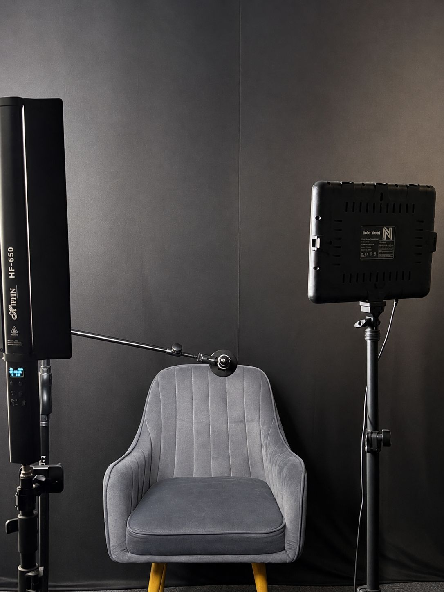
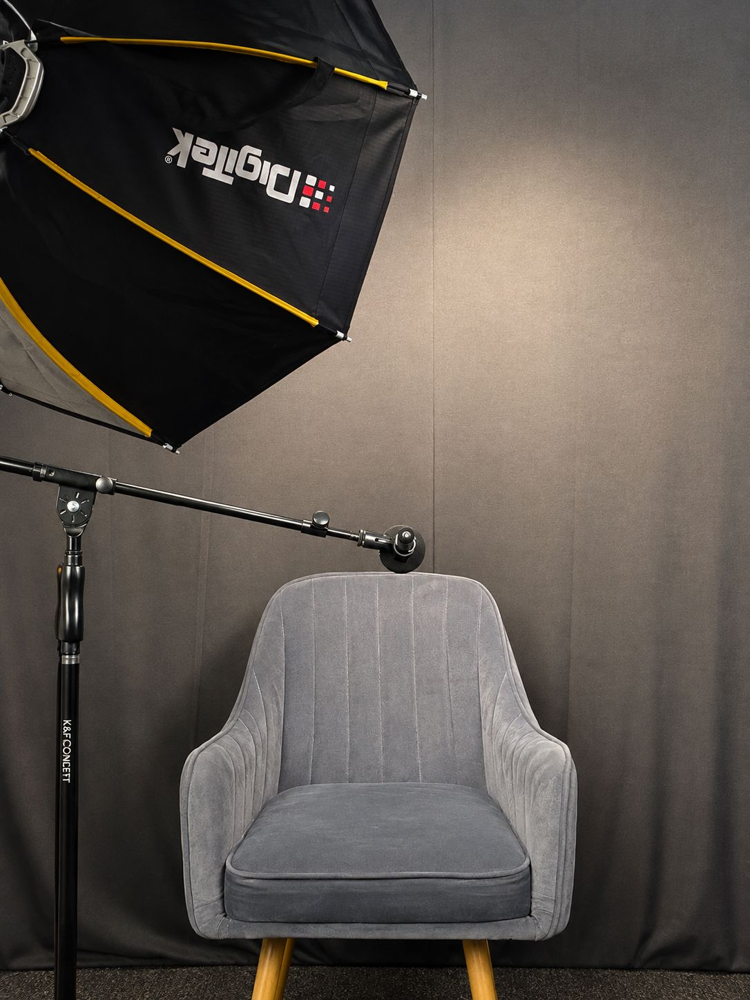

Podcast studio for rent · Neelankarai, Chennai
A podcast studio for one voice.
The Fourth Room has a small podcast and creator studio for rent in Neelankarai, on ECR in Chennai, built for solo creators: podcasters, voice-over artists, YouTubers, audiobook narrators, and anyone who needs a quiet hour and a closed door.
- ₹999 an hour, on its own or with the main room
- Quiet, air-conditioned and set up for one person
- Good for recording, editing or a call you can't take at home
Who it's for
Made for the creator who works alone.
Podcasters
Record a solo episode or a remote interview without the dog, the traffic or the neighbour's drill.
Voice-over & narration
A small, quiet space for ads, explainers, audiobooks and audition tapes.
YouTubers & streamers
Film talking-head videos or go live from somewhere that isn't your bedroom.
Run a show from here
Host a live recording in the main room with an audience of up to 20, and use the studio to prep.
Deep work
Edit for two hours with the door shut. The AC is on.
Not sure?
Message us with what you're making and we'll tell you honestly whether the studio suits it.
Inside the studio
Lights, a chair and a dark backdrop.


- A comfortable armchair in front of a dark grey backdrop
- A large softbox light
- An LED panel light on a stand
- A tall LED tube light
- A boom arm stand
Questions
Renting the studio.
How much does it cost to rent the podcast studio?
The studio is ₹999 an hour. You can book it on its own or together with the main room.
Where is the podcast studio?
At The Fourth Room, 214, South First Cross Street, Kapaleeshwarar Nagar, Neelankarai, Chennai 600041. Neelankarai is on ECR, close to Palavakkam, Thiruvanmiyur and Injambakkam, and an easy drive from OMR.
Can I shoot YouTube videos or Instagram reels here?
Yes. The studio has a softbox, an LED panel, a tube light and a dark backdrop behind an armchair, so it works for talking-head videos and reels as well as audio.
Can I record a podcast with a group or a live audience?
The studio is set up for one person. For a panel, a group conversation or a live recording with an audience of up to 20, book the main room as well.